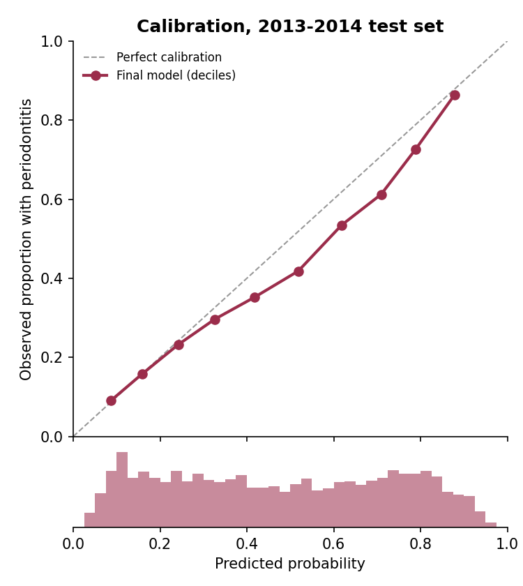
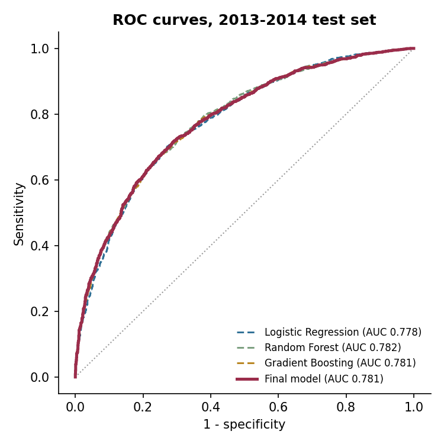
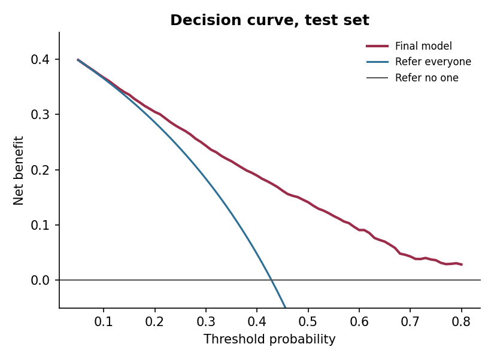

How likely is gum disease?
Answer 14 short questions to estimate your chance of moderate or severe gum disease (periodontitis). The questions come from a US national health survey in which 10,660 adults also had a full gum examination by a dentist.
Your answers have changed. Answer every question to update this estimate.
Your estimate
– of moderate or severe gum disease
What this means
What to do next
What shaped your estimate
Each bar shows how many percentage points (pts) your estimate changes when that one answer is swapped for a typical answer in the survey (the most common answer, or the middle value for numbers such as age). It explains how the model works — it is not a measure of cause and effect.
Things that may help
Answers used
How accurate is it?
The model learned from 7,050 adults in NHANES 2009–2012 and was then tested, once, on 3,610 different adults from NHANES 2013–2014 — a later survey it had never seen. Every one of them had a full-mouth gum examination, scored with the CDC/AAP definition used for national surveillance. No estimate is a diagnosis: about 17 in 100 people in the lower-risk band did have moderate or severe gum disease.



Limits you should know
- It was built on adults in the United States. How well it works in other countries is not yet known.
- It estimates whether gum disease is present now, not your future risk.
- On average it slightly over-estimates: in the test survey, for every 100 cases it expected, about 90 were found (about 80 for the US adult population as a whole). Treat the percentage as a guide, and the risk band as the message.
- It is less accurate for people aged 65 and over, people with diabetes and people who did not finish high school — groups that are also at higher risk.
- Only the original English survey questions were tested; translated versions have not been validated.
- It has not been tested in dental clinics or followed over time. It is not a medical device.
About PerioRisk
Why it exists
About four in ten US adults aged 30 and over who have teeth have periodontitis, and it is often painless until late. A full gum examination needs a dental visit; a short, validated questionnaire can help people decide to have one and helps researchers estimate gum disease in surveys without examinations.
How it was built
Open NHANES data (CDC/NCHS, public domain) → the CDC/AAP case definition applied to every measured site between the teeth (wisdom teeth excluded) → three model types compared by cross-validation → gradient boosting with probability calibration → one test on a later survey cycle, including calibration, decision-curve, subgroup and survey-weighted analyses, reported following TRIPOD+AI. The whole pipeline re-runs with one command and reproduces the published model exactly.
Privacy
The model runs inside this page. Your answers are not uploaded, stored, logged or tracked — there are no cookies and no analytics. Closing the tab erases them.
For researchers and developers
pip install periorisk
import periorisk
r = periorisk.predict(age=58, sex="male", smoking="current",
gum_health="fair", loose_teeth="yes", floss_days=0)
print(r.percent, r.band) # estimate and risk band
periorisk.recalibrate(r.probability, target_prevalence=0.30)Source code, results report, model card and TRIPOD+AI checklist: github.com/Hezarani/periorisk. To cite PerioRisk: Boustani Hezarani H. PerioRisk: periodontitis risk screening from self-reported questions (software). Zenodo; 2026. doi:10.5281/zenodo.23813178.
Author
Hossein Boustani Hezarani, DDS · ORCID 0009-0007-8481-0498 · part of the open DentGit dental tools.